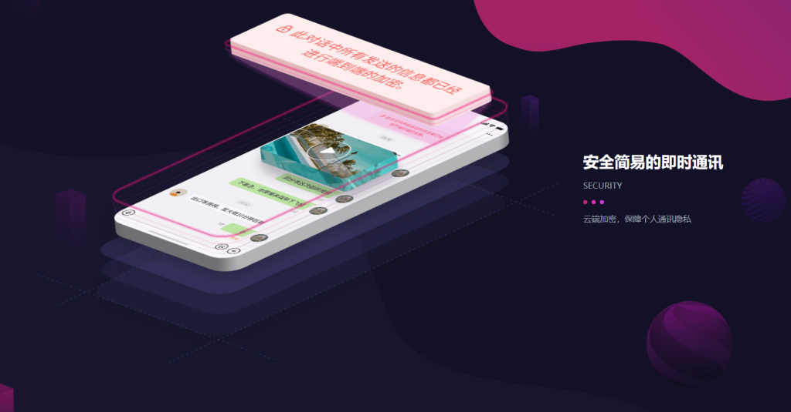

丝瓜聊天怎么不让别人加我？
发布时间：2025-02-08
在丝瓜聊天中，如果你不想让别人加你，可以通过以下方式：1) 设置隐私权限，限制谁能找到你；2) 关闭“谁可以加我为好友”选项；3) 使用“仅好友”功能接收信息；4) 设置陌生人发消息需要验证。这样可以有效控制谁能联系你，减少陌生人添加的可能性。

如何在丝瓜聊天中设置隐私权限
关闭陌生人查找功能
- 限制陌生人搜索：在丝瓜聊天的隐私设置中，可以选择关闭让陌生人通过手机号、昵称或者其他信息搜索到你。这样，即便别人知道你的某些个人信息，依旧无法通过平台直接找到你。
- 启用可见性设置：你可以选择设定自己的账户在搜索结果中的可见性。通过这一功能，只有已经添加你的朋友或者特定群体，才能通过平台找到你，而陌生人则无法搜索到。
- 隐藏搜索功能：一些平台允许完全关闭个人信息的搜索功能，确保即便别人知道你的一些基本资料，也无法搜索到你。这样的设置能够有效保护你的隐私，防止不必要的打扰。
设置好友添加限制
- 启用好友验证功能：丝瓜聊天提供好友验证功能，让你可以对添加好友的请求进行筛选和确认。这样，即使有人想加你为好友，必须经过你的同意，避免陌生人直接打扰。
- 设置仅限指定群体添加：部分平台允许用户选择好友添加的范围，你可以设定只有某些特定的联系人或群体能添加你为好友，从而减少陌生人加你为好友的机会。
- 禁止陌生人直接加好友：在设置中，你可以选择关闭陌生人加你为好友的权限，这样只有在你主动加别人，或者通过特定途径与他人建立联系时，才有可能成为好友，避免了随便加好友的麻烦。
保护个人信息安全的技巧
防止陌生人加好友
- 启用好友验证：你可以设置好友验证功能，让别人添加你为好友时必须通过你的审核。这避免了陌生人随便加你为好友，减少了骚扰和隐私泄露的风险。
- 限制好友添加范围：在设置中，可以选择仅允许已知的联系人或指定的群体加你为好友。这样，只有你信任的人才能主动发起好友请求，避免陌生人乱加。
- 关闭陌生人加好友功能：通过隐私设置，关闭陌生人加好友的权限，使得只有你主动联系的人才能成为你的好友，进一步确保自己不被陌生人打扰。
隐藏个人资料信息
- 设置个人资料可见范围：丝瓜聊天提供了可见性设置，允许用户控制谁能查看自己的资料。你可以选择将自己的个人信息仅对好友可见，或完全隐藏，只允许自己查看。
- 关闭在线状态显示：为了保护自己的隐私，你可以选择隐藏在线状态。这样，别人无法知道你是否在线，从而避免了被骚扰的可能性。
- 隐藏头像和昵称：部分平台允许隐藏或设置更模糊的头像和昵称，避免陌生人通过这些基本信息辨认你。通过这种方式，你可以更好地保护自己的隐私，减少被跟踪的风险。

丝瓜聊天中的消息隐私设置
控制谁能给你发消息
- 设置“仅好友”接收消息：你可以在设置中选择“仅好友”接收消息，这意味着只有你已经添加为好友的人才能给你发送消息。陌生人无法直接打扰你，避免了不必要的骚扰。
- 屏蔽陌生人消息：通过隐私设置，你可以屏蔽陌生人发来的所有消息。这样，陌生人即使尝试联系你，也无法进入你的消息界面，减少了信息泄露的风险。
- 控制特定群体消息权限：部分平台允许你控制哪些群体能够发送消息，例如只允许同一个群聊中的成员发消息。这样，你可以限定消息接收的范围，防止陌生人的干扰。
设定消息验证机制
- 启用消息验证功能：为了避免陌生人给你发送信息，你可以开启消息验证功能。这意味着所有陌生人发来的消息需要你手动验证，确认是否接收。这样可以有效避免垃圾信息和骚扰信息。
- 设置自动回复功能：一些平台支持自动回复功能，当陌生人首次给你发送消息时，可以自动回复一条预设的消息，例如“请先通过好友验证”或“仅限好友联系”。这种方式可以在不阻断交流的情况下，有效管理消息接收。
- 仅通过特定方式接收消息：你还可以设置消息仅通过特定方式接收，例如只能通过群聊、社交圈或特定的社交网络内进行沟通。这种方式减少了直接私聊带来的隐私风险。

如何管理丝瓜聊天的好友请求
启用“仅好友”功能
- 限制好友请求来源：通过启用“仅好友”功能，你可以设定只有已经在你的好友列表中的人才能发送好友请求，防止陌生人随便加你为好友，避免骚扰和潜在的隐私风险。
- 控制好友请求的可见性：你可以设置只有特定的人群能够看到你的资料并向你发送好友请求。例如，只有通过认证的用户或相同圈子的人才能发送请求，从而提高社交安全性。
- 限制互通信息的范围：启用“仅好友”功能后，不仅好友请求受到限制，其他涉及个人信息的功能也会被约束。这意味着陌生人即使有你的联系方式，也无法通过平台直接发起联系，确保了隐私的保护。
自动拒绝陌生人请求
- 设置自动拒绝陌生人好友请求：如果你不想接收陌生人发送的好友请求，可以启用自动拒绝功能。这样，所有不在你通讯录中的用户发来的好友请求都会被系统自动拒绝，减少了管理好友请求的麻烦。
- 建立好友请求黑名单：部分平台允许你设定黑名单功能，自动将某些用户加入黑名单并拒绝他们的请求。这样，无论对方发起多少次请求，都无法打扰到你。
- 限制特定地区或群体的请求：通过设置地理位置或社交圈的限制，你可以让好友请求仅限于某些特定地区或兴趣群体的人。这样，你可以更精确地控制哪些人有权限向你发出好友请求。
丝瓜聊天防止被骚扰的功能
开启陌生人消息过滤
- 自动屏蔽陌生人消息：通过启用陌生人消息过滤功能，你可以确保只有好友或认证用户可以向你发送消息。陌生人发送的消息会被自动拦截，避免了垃圾信息和骚扰信息的打扰。
- 自定义过滤规则：一些平台提供自定义消息过滤功能，允许你根据关键字、发送频率等设置筛选条件。这样，任何包含不当内容或频繁发送的消息都会被过滤掉，从而保障你的聊天环境清净。
- 分组管理信息接收：你可以将陌生人或不常联系的人归为一个特定的分组，并限制他们通过特定方式发送消息。这种方式进一步控制了陌生人与自己互动的渠道，减少骚扰风险。
禁止陌生人查看在线状态
- 隐藏在线状态：为了防止陌生人看到你的在线状态并主动打扰，你可以设置隐私功能隐藏自己的在线状态。这样，即使你在线，其他人也无法知道，避免了他们因看到你在线而发起不必要的联系。
- 选择性显示在线状态：你还可以设置仅允许好友查看你的在线状态，陌生人则看不到。这种设置确保了只有信任的人才能看到你是否在平台活跃，减少了陌生人通过在线状态判断你是否接收消息的机会。
- 关闭“最后上线时间”显示：某些平台允许关闭“最后上线时间”的显示功能，防止陌生人通过你上次的在线时间推测你的活动模式。这一设置帮助你更好地保护自己的隐私，避免被陌生人追踪。
如何关闭陌生人加我为好友的功能？
你可以在丝瓜聊天的隐私设置中关闭陌生人加你为好友的权限。进入设置后，找到“好友请求”选项，选择“仅好友”或“关闭陌生人加好友”功能，这样就能有效防止陌生人随意添加你为好友。
如何设置仅允许特定人群加我为好友？
在丝瓜聊天中，你可以通过设置“仅好友”功能来限制好友请求。这样，只有你已经加过的人才能向你发起好友请求。你还可以设置更精细的权限，比如通过社交圈子或共同群聊筛选好友请求来源。
怎样屏蔽陌生人给我发消息？
你可以在隐私设置中启用“陌生人消息过滤”功能。通过这一功能，陌生人向你发送的消息会自动被屏蔽或进入待验证状态。这样，你只需要处理来自好友或验证通过的消息，避免被陌生人骚扰。